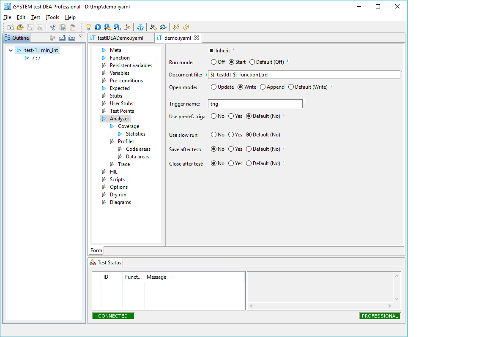
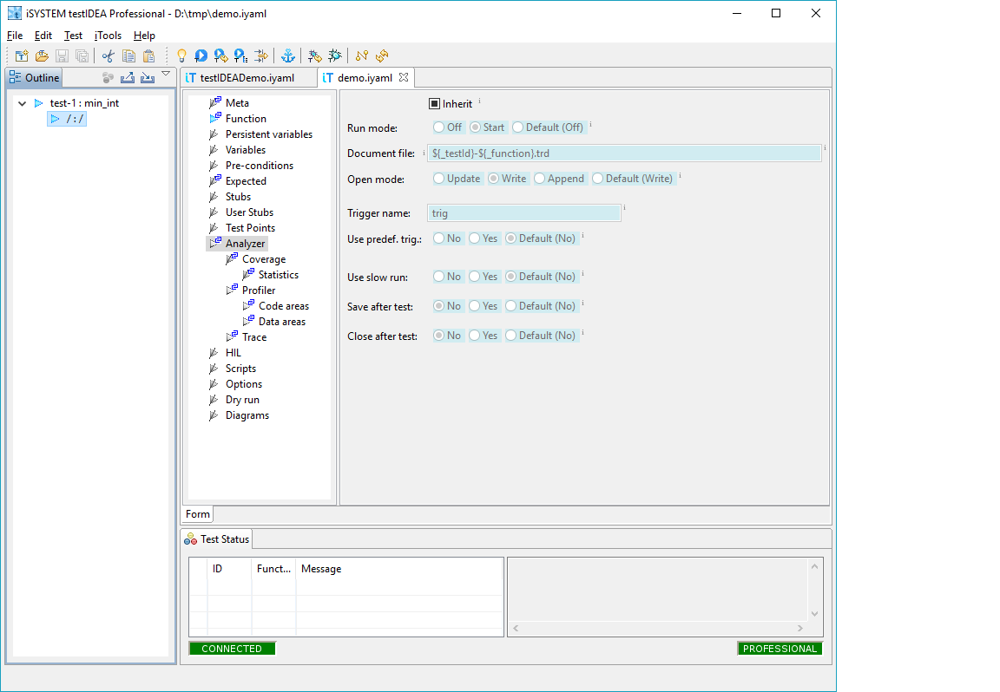
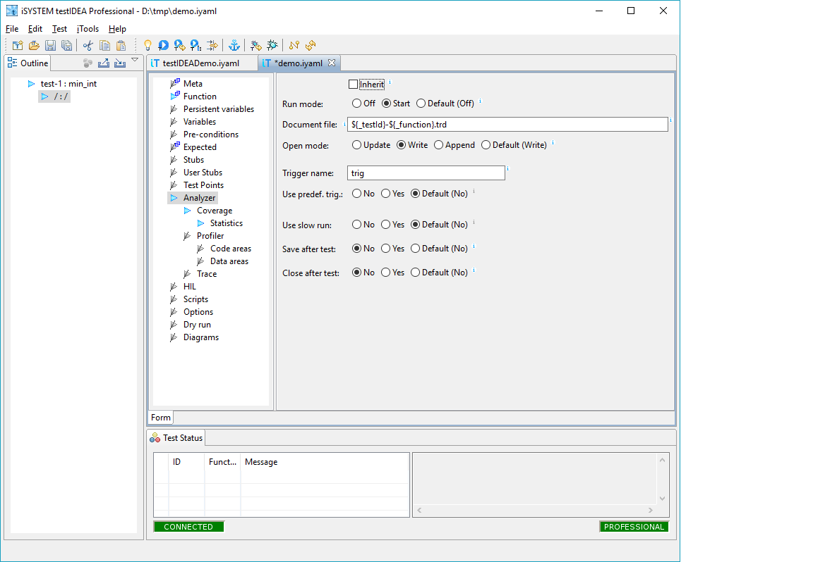

Derived test cases
Often we want to group tests based on some common property, for
example on function to be tested. Such tests also usually share at
least some test case sections. To provide this functionality,
tests can be organized hierarchically in a tree structure. Tests
on the top level of the tree are called base tests, while
their children are called derived tests.
Derived tests inherit all test sections from their
parents by default, but they can also override them.
The sections, which are specified in derived tests (overridden),
are not inherited from base test case.
Example: Suppose we have a test case with
several sections defined:

If we add a derived test case, it inherits all settings from the
base test case:

Inherited sections are marked with a blue icon marker
. Background of
input fields, which contain data from parent test case is
set to blue and can not be modified.
Since it does not make much sense to have two
exactly equal test cases, we can change inheritance status of a section.
The image blow shows section Analyzer, where
check-box Inherit is not selected, so modification of
settings is possible. Inherited status can be toggled by clicking
the check-box.

Note, that only complete sections can be inherited. For example,
it is not possible to inherit only analyzer file name, and
specify coverage criteria.
The only field that is never inherited is check-box Execute
from section Meta.
Abstract tests
Sometimes it may be handy to specify base test case, which should
not be executed directly, because it only specifies sections for
derived test cases. Such test cases are called
abstract test cases. To tell testIDEA, that they
should not be executed, uncheck the Execute check box
at the top of section Meta.